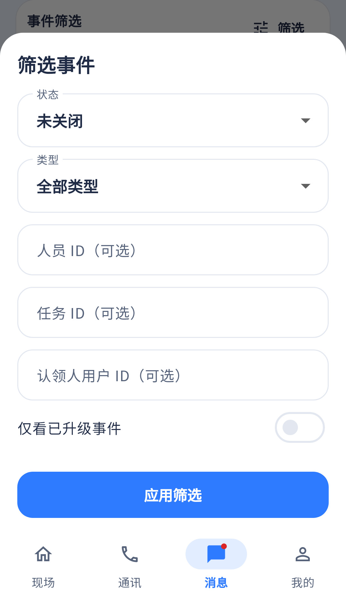

过滤请求已有；让现场用户选择可读对象与一键重置是重点补项。
相同 · 已有基础
状态、类型、人员、作业、认领人、升级过滤和应用都存在。
不同 · UI与场景
当前实际底部弹层，无设计头图；人员/作业/认领人用ID文本框，缺重置按钮。
01 / 先看 UI
两图显示宽度统一；设计390px与当前360逻辑宽的画布不同。各图可独立滚动到底，点击“原图”放大。


使用既有组件截图；业务数据为示例。
02 / 逐项核对功能与小交互
入口：消息 → 筛选 · 当前形态：弹层
| 编号 | 部位 | 设计要求 | 当前UI | 功能结论 | 下一步 |
|---|---|---|---|---|---|
| 23-01 | 容器 | 筛选事件内容稿 | 当前BottomSheet可滚动、避键盘 | 已有代码 | 保留弹层，不把头图和底栏重复塞入弹层 |
| 23-02 | 状态 | 状态下拉 | 当前已有，多实际状态可选 | 已有代码：active/open/claimed等 | 统一显示词和“待处理”定义 |
| 23-03 | 类型 | 类型下拉 | 已有 | 已有代码：type过滤 | 统一告警分类，保留未知类型 |
| 23-04 | 认领人 | 可选择姓名/不限 | 当前输入认领用户ID | 部分：参数可用，业务选择器缺失 | 接同站用户目录，显示姓名并传稳定ID |
| 23-05 | 关联人员 | 选择人员/不限 | 当前人员ID文本框 | 部分：缺搜索选择器 | 复用人员选择组件，同名显示编号 |
| 23-06 | 关联作业 | 选择作业/不限 | 当前任务ID文本框 | 部分：任务过滤走task/events分支 | 复用作业选择，按任务接口获取后再过滤 |
| 23-07 | 升级开关 | 仅已升级及说明 | 当前开关已有，缺解释副文案 | 已有代码：escalated | 补说明与可读状态 |
| 23-08 | 重置 | 重置按钮 | 当前没有 | 缺失 | 清空所有维度并恢复默认状态，应用后回第一页 |
| 23-09 | 应用取消 | 应用后回列表，取消不生效 | 当前返回EventFilters后才setFilters | 已有代码 | 保留原筛选，补已选摘要 |
源码依据
events/events_page.dart:1446；events/event_repository.dart:15
链接为随报告保存的带行号快照；行号对应分析时源码。以函数和字段共同定位，不能将请求代码视为执行成功证据。